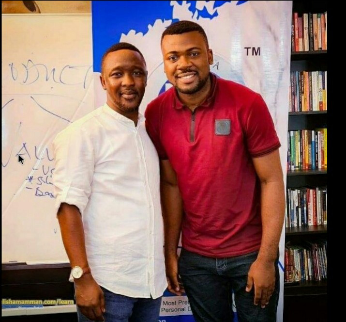
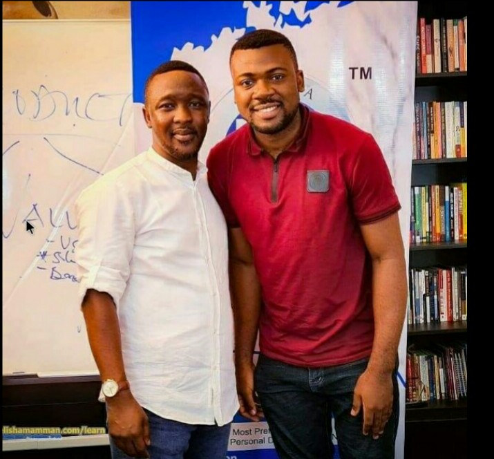

Then I Warn You Not To Read This Page Cause This Will Change Your Mind And Prove You Wrong!!
Just take a look at some of the many results BOC had done for people like you:
She made her first $1000
 She made nearly N2 million from just one product
He made N502,000 from one voice note he heard in the BOC College.
She made nearly N2 million from just one product
He made N502,000 from one voice note he heard in the BOC College.
 A student of BOC5 earned N406,000 + N21,000
A past student in 2020 BOC Edition never made less than N500,000 monthly after the class
The BOC College has worked for thousands of people all over the world and it still works even today.
But before I go on, there's one important thing I need to say...
This was made for complete or intermediate beginners and not experts.
So if you are an expert this would be more like a class revision for you.
It is also not for increasing or sharpening your copywriting skill.
It is for total beginners who want to learn copywriting from scratch.
To increase their sales.
It is not a "get-rich-quick" system.
This will not teach you about affiliate marketing although it works for affiliates too.
With the many Expertnaire affiliates that exist, Nigerians have become so suspicious that once they hear words like:
Making "millions" or words like "secrets", "systems", they'll think it is affiliate marketing.
But you know what?
I am not going to promise you that you'll earn something immediately you join BOC.
Cause knowledge, implemention and experience plays a lot in getting results with this system.
This is not the "Ultimate Guide" to making sales, you'll have to learn more about the skill yourself after the class.
And this college is not for lazy people.
You'll have to learn how to extract information from the videos you watch and be able to explain it in your own words.
You'll have to write your own copy and test it.
You'll have to do your assignments religiously and practise for this system to work for you.
So if you're not willing to do any of that or you don't have the time for it(or you don't want to create the time)...
You can just stop reading this page right now and continue whatever you were doing before you got here.
But for those who are truly interested and want to learn how to incredibly increase sales, let's continue.
A student of BOC5 earned N406,000 + N21,000
A past student in 2020 BOC Edition never made less than N500,000 monthly after the class
The BOC College has worked for thousands of people all over the world and it still works even today.
But before I go on, there's one important thing I need to say...
This was made for complete or intermediate beginners and not experts.
So if you are an expert this would be more like a class revision for you.
It is also not for increasing or sharpening your copywriting skill.
It is for total beginners who want to learn copywriting from scratch.
To increase their sales.
It is not a "get-rich-quick" system.
This will not teach you about affiliate marketing although it works for affiliates too.
With the many Expertnaire affiliates that exist, Nigerians have become so suspicious that once they hear words like:
Making "millions" or words like "secrets", "systems", they'll think it is affiliate marketing.
But you know what?
I am not going to promise you that you'll earn something immediately you join BOC.
Cause knowledge, implemention and experience plays a lot in getting results with this system.
This is not the "Ultimate Guide" to making sales, you'll have to learn more about the skill yourself after the class.
And this college is not for lazy people.
You'll have to learn how to extract information from the videos you watch and be able to explain it in your own words.
You'll have to write your own copy and test it.
You'll have to do your assignments religiously and practise for this system to work for you.
So if you're not willing to do any of that or you don't have the time for it(or you don't want to create the time)...
You can just stop reading this page right now and continue whatever you were doing before you got here.
But for those who are truly interested and want to learn how to incredibly increase sales, let's continue.
How It All Began...
The story begins at the University Of Uyo. I had just gotten my admission into the school. I thought I had finally arrived... I studied microbiology for 4 years. Graduated with a 2'1 Spent over a million naira in the course of my four years in school fees, feeding expenses, accommodation, school materials, transport fares.. What did I get in return?... Nothing! Absolutely nothing. The only money I've made from Microbiology is the one ITF paid me for doing industrial training. Even that one was just N15,000. One day, I decided to try my luck on betting to see if I would win at least some money to be able to take care of myself. Unfortunately I ended up becoming addicted to betting... I realized I couldn't stop myself any longer, any money I got was spent on betting and as usual i lost the money. I continued living like that because I was a slave to addiction. Until I gave my life to Christ and became a Christian. I changed my ways and got a job as a private teacher earning 95,000naira ($229.31). In 2016, I learnt about a skill by which one could generate more than 2000 potential clients, make as much as $1000 in less than a month. Get clients that will thank you for working with them and pay you the big amounts you deserve without complaints. I focused my energy on learning the skill and systems that was needed for it to operate properly and I started to make use of it. Now, I have made over 90 million naira and trained more than 500 people in becoming millionaires with this skill. I also set up an automation system so that even if I stop working today, I will still be receiving credit alerts daily.
Now why should you care about my story?
Let's start with a proper introduction.
 My name is Emmanuel Akpe, also known as the Prince Of Copywriting.
I am an eight figure copywriter with great results, that has affected the lives of 18,000+ people positively both directly and indirectly.
I have worked with brands like Elisha Mamman

I have been interviewed by FNISBC on their YouTube Channel.
I have spoken on copywriting with Franklin Emmanuel on his YouTube channel.
And through the BOC College many great copywriters such as Chianu Solomon (The Marketing Oxide), Esther Odeminigwe (Smilepreneur), Isaiah Ibigbemi (He's great at Upwork), Godsplan K. Ugwuja(Pendullum)
I have trained over 18,000+ people in copywriting and have also assisted 500+ persons in becoming millionaires.
So how did this great change happen?
I learnt about how humans think and how I can use that to my advantage - legally
I learnt about human psychology and how I could use them to get thousands of clients and sell my services to them.
I read copywriting, self-development books and consumed them all like as if the world was going to end the next day.
I discovered that copywriting was part of the way we think.
We all use copywriting, some way or the other but we don't easily realize it.
My name is Emmanuel Akpe, also known as the Prince Of Copywriting.
I am an eight figure copywriter with great results, that has affected the lives of 18,000+ people positively both directly and indirectly.
I have worked with brands like Elisha Mamman

I have been interviewed by FNISBC on their YouTube Channel.
I have spoken on copywriting with Franklin Emmanuel on his YouTube channel.
And through the BOC College many great copywriters such as Chianu Solomon (The Marketing Oxide), Esther Odeminigwe (Smilepreneur), Isaiah Ibigbemi (He's great at Upwork), Godsplan K. Ugwuja(Pendullum)
I have trained over 18,000+ people in copywriting and have also assisted 500+ persons in becoming millionaires.
So how did this great change happen?
I learnt about how humans think and how I can use that to my advantage - legally
I learnt about human psychology and how I could use them to get thousands of clients and sell my services to them.
I read copywriting, self-development books and consumed them all like as if the world was going to end the next day.
I discovered that copywriting was part of the way we think.
We all use copywriting, some way or the other but we don't easily realize it.
So what is copywriting?
Copywriting is a skill used to write words that make people to do something. Copywriting is simply persuasive words written down to convince people in huge or small numbers, engage and of course to make money. It is used by famous brands such as Indomie, Golden Penny, Gucci, Coca Cola, Kelloggs, just name any famous brand you know. Also politicians, Bet9ja, advertisers, companies and all kinds of people you won't easily think of. And yes it can be used to get more buyers, to get hired even online or get more followers on Instagram. So what can copywriting do for me? With copywriting, you can work at your 9-5 jobs and write copy that could make you as much as $1500 monthly. With copywriting, you can increase the sales of any other skills you have. The lessons in copywriting can be applied to your other businesses. Just like I do most of the time, even when I travel I still make money by using copywriting in my ten* other sources of income. With copywriting you can entice people to rush to buy from your food shop or salon even if there are 3 other similar shops around them. With copywriting, you can learn how marketing works and set up systems, automate funnels and watch the money flow in. Most business in Nigeria suffer because they are expecting God to send them customers from the sky. Thinking that jobs will just appear all of a sudden. They don't try to advertise their businesses so that people can know about them. Most times they don't even know how to market their products and services well enough. But with copywriting, you will learn how to advertise your businesses well and get more customers. With copywriting, you won't have to be looking at those expertnaire affiliates alerts while your bank account is almost empty. With copywriting you can chill with the big boys and drink that tasty and chilled juice with fresh hot and peppered suya whenever you want to.
And YOU don't need a 100% mark in English to practise copywriting
To practise copywriting, you don't need to know much english. Yes, I mean it. You don't even need to get first class in English in order to use copywriting. I got C5 in English. Surprised? Even if you have never gotten first position in school you can use copywriting and it will work. You don't need any degree or certificate or whatever, name it, to do copywriting. Even if you have been labeled as a 'dummy' or a 'failure' in class, you can still be successful with copywriting. Robert Kiyosaki (a multi-billionaire real estate investor)was not what our teachers would call 'intelligent' in terms of school education. He even said in his book 'Rich Dad, Poor Dad', he wasn't a 'whiz' kid. But still he is a successful and wealthy man partly due to copywriting. You can do a lot of great things as a copywriter. All you need is an eager mind, determination, a phone with charged battery and internet connection. But as you should know, nothing legal comes easy in this world, You'll have to work hard to get powerful results like that in copywriting. You'll have to work, learn, test and keep testing to get great results. And I am not going to start speaking sweet lies to you. I won't tell you that you'd be able to sit down enjoying yourself in Dubai with all the pizza and burgers, or earn thousands of dollars per hour without working/learning. It won't be as easy as placing bets of N150 in a Bet9ja shop in order to make N80,000. You'll have to think harder and smarter and be more persistent than a normal employee. This is what makes a lot of people to give up, not knowing that everything has its time before it shines. Even the sun doesn't shine immediately it is morning. And as for how much you'll earn, It depends on the kind of right effort, experience and time you put into it.
How long will it take me to start making money with copywriting?
I don't usually like to state numbers of months or years cause it depends. It could be six months. But if you don't have the determination or the right circumstance around you (e.g electricity to charge phone, food to eat).... Then the time period will increase even more. If during that six months or one year you make no action to get better or learn more stuff in copywriting.... You won't get those results the other copywriting experts get. Copywriting isn't a one time subject that can be finished in one course or class, the learning always continues.
What does a copywriter do?
A copywriter is a person that writes words to convince people to do something. A copywriter writes stuff like: The words or acts you see in a video ad, they write the scripts used in them. They write the words used on websites, landing pages, influencer social media pages. They also write newspaper advertisements, facebook adverts and billboard adverts. They write slogans for business, they sometimes create the brand name a business will use. When you know what triggers the emotions of mankind and make them to act, you can write copy. How do I learn copywriting? If you want the easiest way of learning copywriting, go to YouTube and search for "How To Become A Copywriter". Join Facebook copywriting groups and see what others have to say. Subscribe to YouTube channels like Dan Lok, Sabri Suby and Alex Cattoni. However there are many fake copywriting teachers and coaches out there with only theories to deliver. They who haven't practised and made money with their skills. I won't suggest you pay for any common copywriting class so you won't invest your money and then get duped.
But what if you could....
What if you could get access to learning the system I and our copywriting legends have used to increase sales easily? Just imagine what impressive results you could get if you can get access to a platform like that where you learn that tested and proven system with others. Then when you eventually learn that system, you practise it and increase your sales 3x or 10x within 90days. What would that do for you? It would be such a glorious day when you finally know how to double your sales, get customers and make money. Or is it nice to have low sales? Do you want a change? Do you want to keep posting pictures of your products on your status and then no one buys? I haven't had a day without credit alerts from sales of my digital products for two years now so I don't know how it feels. But if you'd like a change, then continue reading, cause you're about to see a solid solution.
I introduce to you, the Bachelor Of Copywriting College:
A platform where I and more than five experts deliver our knowledge on copywriting, content marketing and freelancing. Where rather than we catching the fishes for you, we teach you how to catch fish like we do.
Where you learn:
And there's more..
When you join us there at the college, you get FREE amazing bonuses and resources like:
Total Value: N1,250,000
What's MY Guarantee?
I and my team have been running BOC (Bachelor Of Copywriting College)for twenty-seven editions now.
Over 18,000 people from different countries have joined the college.
It's been 4 years now and to be frank...
If I fail to fulfil my promises....
My reputation would be destroyed in the eyes of my mentor Elisha Mamman and over 18,000 people.
Who would want to do that to themselves?
Certainly a wise person would not do that.
Plus I want to keep the title 'Prince Of Copywriting' as a true title and not one that has been overhyped by gullible men.
So obviously it won't be in my or your best interest if I don't deliver on all the promises mentioned above.
If after you join this college, you realize that this is just some overhyped class that has nothing valuable to your life,
Then do message me personally and I will return your money back fully.
If I don't return your money, I give you permission to screenshot your message to me,
Disgrace me on Facebook and WhatsApp to show the world what a fraud I am and save others from falling in the same trap.
But come to think of it...
If I were a fraud, why do you think they said this?
 Or why do you think the famous Olorunfemi Prosperity joined the 15th edition of BOC?
Or how come this happened?
Or why do you think the famous Olorunfemi Prosperity joined the 15th edition of BOC?
Or how come this happened?

Let's just face the facts
All these couldn't have happened if I were a fraud or if BOC was a class with absolutely no value. Even if you can't believe my words... You can know through the works that BOC has done in its students whether BOC is indeed a college of copywriting.
So how do I gain access
to this college?
Certainly a college filled with value worth over a million naira can't be free. You are right, it's not free. And yes I don't feel a bit guilty over this. Here's why It took years of hardship and learning to get to where I am today. I endured a lot of insults, disgrace, years spent and literally passed through fire to get here... And do you suppose it right for me to give away all the information I have learnt throughout these years for free? No, it is not justifiable nor wise. Cause if access to this college were free, then it would get devalued by men who don't know the great value of it. The price tag is just a means of draining out the undesirable men... They who think that they should get everything for free regardless of what it took for the owner to get it. It's like saying someone who went through great dangers to find the antidote to HIV/AIDS and finally found it should give it away for free. So that means he should get nothing for his labour? Even Jesus told his disciples that the worker is worthy of his hire. In other words he deserves it. But because I know the great burden that lies on mankind already: The expenses for food, light, shelter, entertainment, school, clothing and many others... I made the price to access this college extremely affordable... So much that I can boldly say that you'll hardly find any reputable and famous copywriter who'll write copy for such a low price. This is more like me taking a loss, considering what it took me to get it. But I'll do it for my fellow men who are already trying their best to learn about digital skills. I would still be justified if access to this college were at least 40,000naira which is just 3.2% of the worth of the bonuses. But don't worry, it's not upto that. It's just 20,000naira. But if you pay before 15th of August 2022 (resumption date), you'll get in there for a discount price of 5,000naira. If you are a lady, then this is the lowest you'll pay a makeup artist for a simple makeup. And yet your makeup cannot help you to make sales or can it? Will it increase your bank account figure? No it won't. We have started our 28th edition and classes will begin on the 15th of August. Click the button below to join us now. JOIN NOW
Again, here's what you'll get in this college
And there's more..
When you join us there at the college, you get FREE amazing bonuses and resources like:
Total Value: N1,250,000
What's My Guarantee?
I and my team have been running BOC (Bachelor Of Copywriting College)for twenty-seven editions now.
Over 18,000 people from different countries have joined the college.
It's been 4 years now and to be frank...
If I fail to fulfil my promises....
My reputation would be destroyed in the eyes of my mentor Elisha Mamman and over 18,000 people.
Who would want to do that to themselves?
Certainly a wise person would not do that.
Plus I want to keep the title 'Prince Of Copywriting' as a true title and not one that has been overhyped by gullible men.
So obviously it won't be in my or your best interest if I don't deliver on all the promises mentioned above.
If after you join this college, you realize that this is just some overhyped class that has nothing valuable to your life,
Then do message me personally and I will return your money back fully.
If I don't return your money, I give you permission to screenshot your message to me,
Disgrace me on Facebook and WhatsApp to show the world what a fraud I am and save others from falling in the same trap.
But come to think of it...
If I were a fraud, why do you think they said this?
Or why do you think the famous Olorunfemi Prosperity joined the 15th edition of BOC?
Or how come this happened?
Let's just face the facts
All these couldn't have happened if I were a fraud or if BOC was a class with absolutely no value. Even if you can't believe my words... You can know through the works that BOC has done in its students whether BOC is indeed a college of copywriting.
So how do I gain access
to this college?
Certainly a college filled with value worth over a million naira can't be free. You are right, it's not free. And yes I don't feel a bit guilty over this. Here's why It took years of hardship and learning to get to where I am today. I endured a lot of insults, disgrace, years spent and literally passed through fire to get here... And do you suppose it right for me to give away all the information I have learnt throughout these years for free? No, it is not justifiable nor wise. Cause if access to this college were free, then it would get devalued by men who don't know the great value of it. The price tag is just a means of draining out the undesirable men... They who think that they should get everything for free regardless of what it took for the owner to get it. It's like saying someone who went through great dangers to find the antidote to HIV/AIDS and finally found it should give it away for free. So that means he should get nothing for his labour? Even Jesus told his disciples that the worker is worthy of his hire. In other words he deserves it. But because I know the great burden that lies on mankind already: The expenses for food, light, shelter, entertainment, school, clothing and many others... I made the price to access this college extremely affordable... So much that I can boldly say that you'll hardly find any reputable and famous copywriter who'll write copy for such a low price. This is more like me taking a loss, considering what it took me to get it. But I'll do it for my fellow men who are already trying their best to learn about digital skills. I would still be justified if access to this college were at least 40,000naira which is just 3.2% of the worth of the bonuses. But don't worry, it's not upto that. It's just 20,000naira. But if you pay before 15th of August 2022 (resumption date), you'll get in there for a discount price of 5,000naira. If you are a lady, then this is the lowest you'll pay a makeup artist for a simple makeup. And yet your makeup cannot help you to make sales or can it? Will it increase your bank account figure? No it won't. We have started our 28th edition and classes will begin on the 15th of August. Click the button below to join us now. JOIN NOW
PS: Woow, you finished reading such a long landing page. You are an awesome reader with great potential. If you could just learn copywriting at BOC, you'll be able to fine-tune that skill. It's because of you that I am going to reveal my secret. If you make use of the coupon code "Prof" when you want to make your payment, you'll immediately get a 20% reduction in your payment. Once again, click the button below.
JOIN NOW